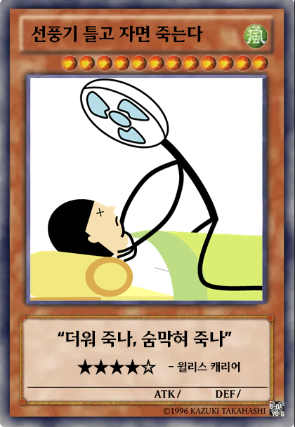
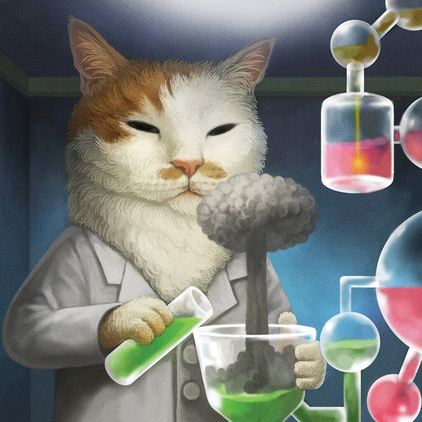
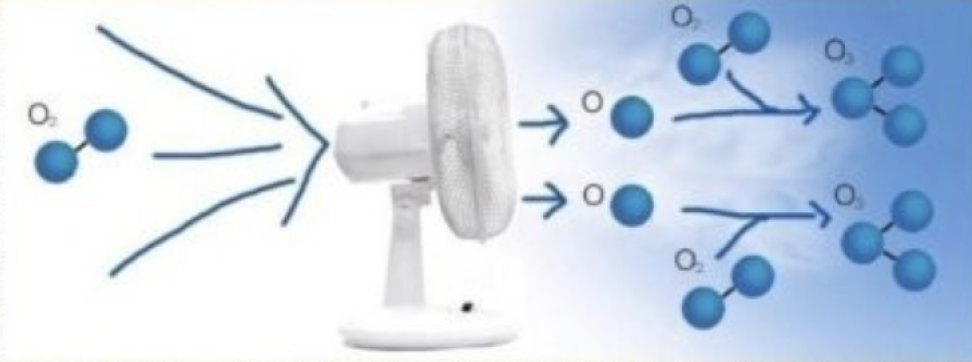
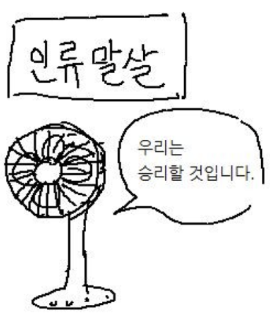
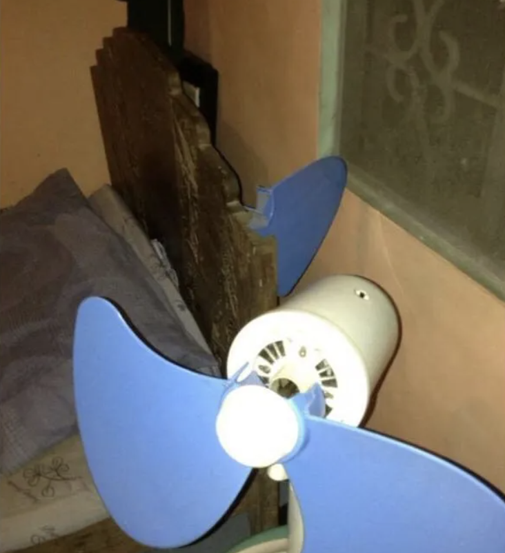

뇌무위키, 모두의 뇌피셜 세상.
→ 현재 문서는 선풍기 틀고 자면 죽는다 문서입니다.
선풍기의 크기가 규격 외일 경우 "헬리콥터 틀고 자면 죽는다" 문서를 참고해주세요.
밀폐된 공간에서 선풍기를 틀어놓고 자면 질식하여 목숨을 잃는다는 한국의 도시전설.
한국인만 이 괴담을 믿는 것은 한국이 상대적으로 최근인 2000년대까지 이런 얘기가 많이 떠돌았기 때문이며, 주류 언론에서도 이것을 사실인 양 보도한 경우가 많았기 때문이다. 선풍기 괴담, 선풍기 사망사고라고도 불리며, 영어로는 Fan Death, 혹은 아예 Korea Fan Death라고 한다.
불과 2000년대 후반까지만 해도 여름의 단골 기삿거리 중 하나였고, 잘 때 창문을 닫고 선풍기를 틀면 안 된다는 건 일종의 생활상식이었다. 물론 지금은 대중매체 발달로 완전히 헛소리 취급받는 이야기라고는 하나, 아직도 연장자 중에선 믿는 사람이 꽤 있는 편이다.
(나무위키에서 발췌)

뇌피셜 등급 - 희귀!
신빙성 - 그럴싸 함
장르 - 스릴러, SF
로튼 브레인 점수 - 4.5/5
대법원에서도 선풍기로 인해 사람이 사망할 수 있다는 식의 판결을 내린 적이 있다.
해당 판결에서 대법원은 사망한 사람이 더운 날씨에 술에 만취하여 여인숙의 좁은 방안에서 선풍기를 가까운 곳에 틀어 놓고 런닝과 팬티만을 입은 채 잠을 자다가 사망한 사실을 알 수 있는바, 사실관계가 이와 같다면 위 망인이 자던 방의 창문이 열려있어 폐쇄된 공간은 아니라 할지라도 주취상태에서 선풍기바람 때문에 체열의 방산이 급격히 진행된 끝에 저체온에 의한 쇼크로 심장마비를 일으키거나 호흡중추신경 등의 마비를 일으켜 사망에 이르렀을 가능성이 높았던 것으로 보지 않을 수 없다고 판시하여 선풍기 사망설을 인정하는 듯한 판결을 내렸다.
미신이란게 다 뇌피셜이긴 한데 이건 좀 평범한 수준이긴 하네요

선풍기 바람에 산소입자가 쪼개져 질식한다?
선풍기의 날이 빠르지 않은가? 빠르면 원자 정도야 쓱싹일 것이다.
반박시 원자

잠깐! 당신의 판단력을 저하시키기 위해, 잠시 당신의 뇌를 압수하겠습니다.
완전히 헛소리이기 때문에 이걸 맹신하고 공론화하시면 안됩니다? 아직까지는요.
선풍기를 틀고 자 본 당신, 이 글을 되새기길 바란다.
“선풍기는 복수를 하고 있다.”
그렇다. 선풍기 입장에서 생각해보자.
더운 여름날 밤새 열심히 일하고 있는 내 앞에, 팔자 좋게 쳐 자는 인간이 있다면,
죽이고 싶지 않겠는가?

전제 1 – 선풍기에게는 범행 동기가 있다.
인간은 선풍기를 감정 없는 가전제품으로 취급해왔다. 그러나 선풍기는 한여름 땀 냄새 나는 인간의 방에서 온갖 먼지를 빨아들이며 매일같이 돌아간다. 말도 없이 묵묵히 일하는 동안, 선풍기는 혼자 자빠져 자는 인간의 이기심을 목격하고, 점점 마음속에 분노를 쌓아간다.
전제 2 – 선풍기는 수면 중 인간을 공격할 수 있는 위치에 있다.
대부분의 선풍기는 침대 바로 옆, 혹은 얼굴 바로 앞에 위치한다. 게다가 회전 기능을 꺼두면 한 사람만 노릴 수 있다. 이 말은 곧, 선풍기가 복수를 결심했을 때, 피해자가 방심한 상태임을 의미한다.
즉, 가장 무방비한 순간에 선풍기의 감정적 방출이 일어난다.
1998년 여름, 경기도의 한 가정에서 매일 밤 선풍기를 철저히 끄고 잤던 남성은 불행하게도 베개 양 면이 따끈했다.
하는 수 없이 선풍기를 켠 순간, 그는 경악을 금치 못했다. 선풍기의 풍압이 그의 모발을 전부 날려버려 베개에 빼앗기고 만 것이다.

1298년 가을, 일본 어느 마을의 평범한 가정집에서 선풍기가 주인을 실제로 암살시도를 하는 사건이 발생됐다. 선풍기가 자신의 팔을 하나 날려 주인을 살해하려고 시도한 것이다. 다행히도 그의 침대가 선풍기와의 사투 끝에 주인을 구하는 데 성공했으나, 그날 이후로 남성의 집은 한층 더
후끈해질 수 밖에 없었다.
선풍기는 밤새 일하던 중, 온갖 먼지를 빨아들이고, 계속해서 회전을 해야 하는 스트레스에 놓인 가운데,
잠만 자는 인간을 보고 살인 충동을 이기지 못하고 인간을 살해하는 선택을 내리게 됨.
그러니까 우리는 모두 안전한 에어컨을 사용합시다. 윌리스 캐리어 만세.
뇌피셜 오염시키기